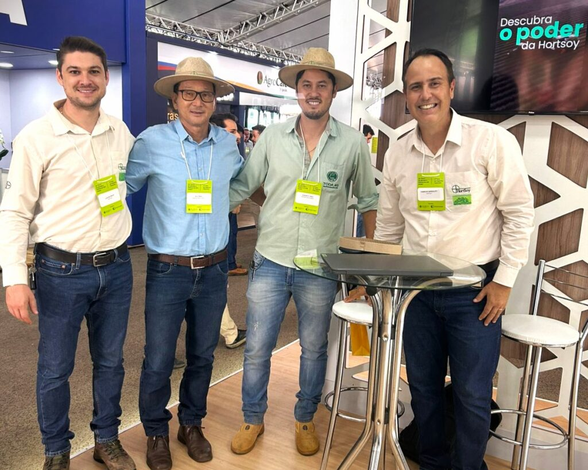
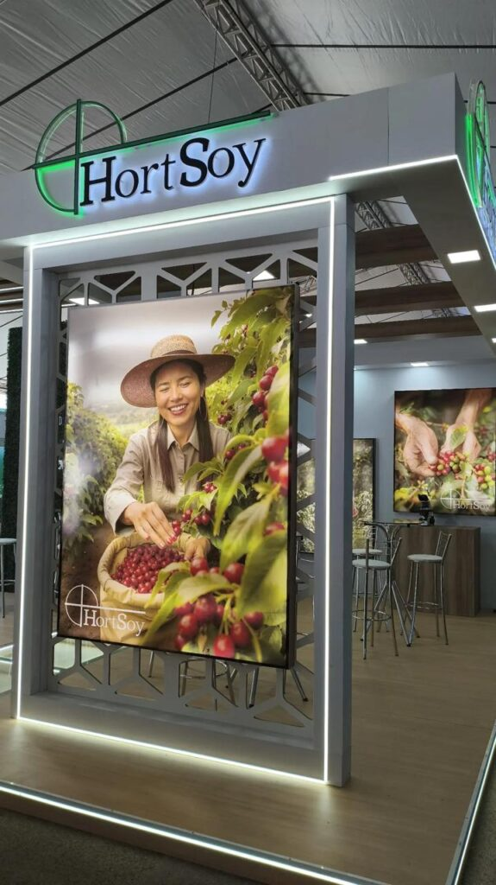
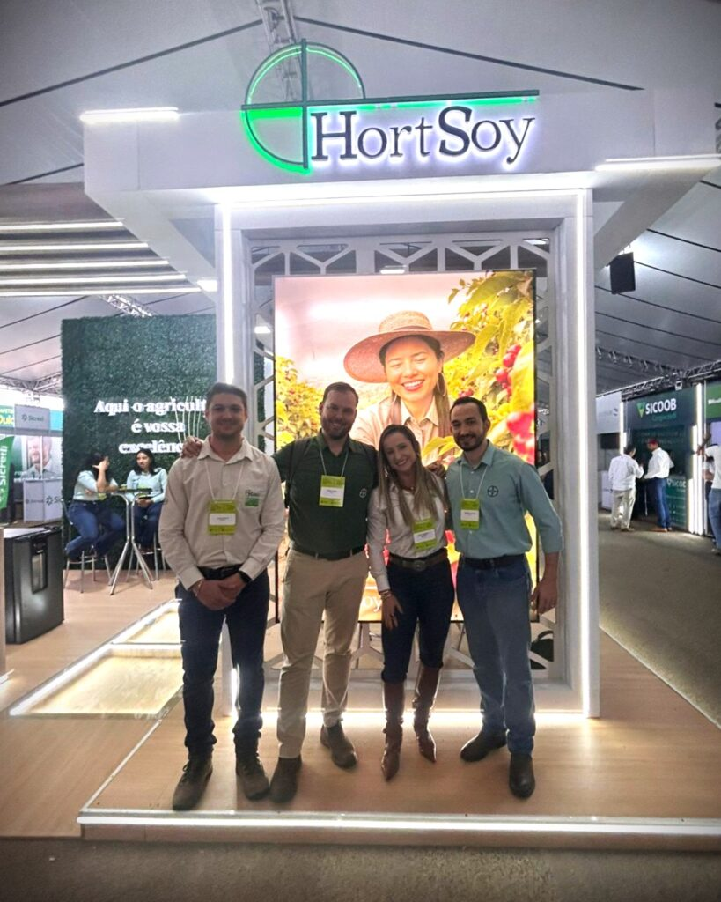

Hortsoy — Conectando o Campo ao Futuro.


HortSoy marca presença em uma das maiores feiras do Cerrado Mineiro, realizada em Patrocínio.
Participar de uma das maiores feiras do Cerrado Mineiro, realizada na cidade de Patrocínio e promovida pela Expoccacer e Andav, foi um verdadeiro marco para a Hortsoy.
Com orgulho, estivemos presentes com nosso stand, em um evento que celebrou a força e a tradição da cafeicultura. Mais do que expor nossos produtos e soluções, tivemos a honra de recepcionar nossos clientes – as verdadeiras estrelas da nossa corporação – e de fortalecer os laços com nossos parceiros, peças fundamentais em nossas estratégias.
Foram dias intensos de trocas, aprendizado e negociações de excelência, reafirmando nosso compromisso com a inovação, o desenvolvimento e o sucesso de todos que fazem parte do universo Hortsoy.
Seguimos juntos, cultivando resultados e colhendo grandes conquistas.
Juntos somos mais fortes. 🚜💚
Conectando conhecimento e oportunidades no agronegócio.

Nosso objetivo foi promover dias absolutos de negociações oportunas, compartilhamento de conteúdos relevantes e estratégicos, com foco em timing, atualizações tendências e mercadologia aplicada ao universo da cafeicultura.
Fortalecendo parcerias, cultivando resultados.
Ser Patrocinador deste evento, sempre resulta em avanços magnéticos, pois é um movimento amplamente reconhecido por toda região. Como resultado, houve um aumento significativo em nossa demanda, onde a HortSoy com seus Parceiros estratégicos, têm o compromisso e garante as melhores soluções em seu plantio, reforçando o compromisso com a inovação e o desenvolvimento do setor agrícola.

Juntos, elevamos a produtividade no campo.
Seguiremos promovendo encontros técnicos e capacitações para continuar impulsionando a excelência no campo!